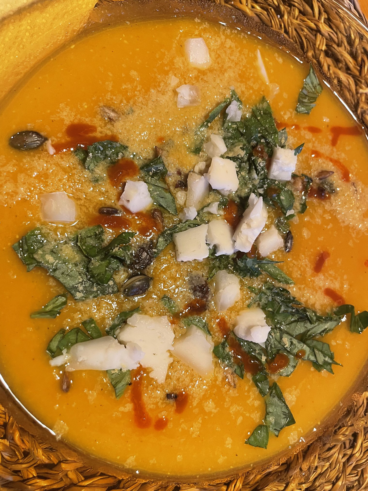

Crema de calabaza y lenteja roja
Ingredientes
4×
- 1 cebolla
- aceite de oliva
- 800 g de calabaza
- 150 g de lenteja roja
- 1 l de agua o caldo de verduras
- semillas tostadas
- queso de cabra
- albahaca
- levadura nutricional
- sriracha

Preparación
Paso 1
Sofreír 1 cebolla picada con un poco de aceite de oliva.
Paso 2
Añadir 800 g de calabaza en dados y 150 g de lenteja roja, cubrir con 1 l de agua o caldo de verduras y cocer 25min.
Paso 3
Triturar y salpimentar.
Paso 4
Servir con semillas tostadas, queso de cabra desmenuzado, albahaca picada, levadura nutricional y un toque de sriracha.
Resumen
1 cebolla
aceite de oliva
Sofreír
800 g de calabaza
150 g de lenteja roja
1 l de agua o caldo de verduras
cocer
semillas tostadas
queso de cabra
albahaca
levadura nutricional
sriracha
Triturar